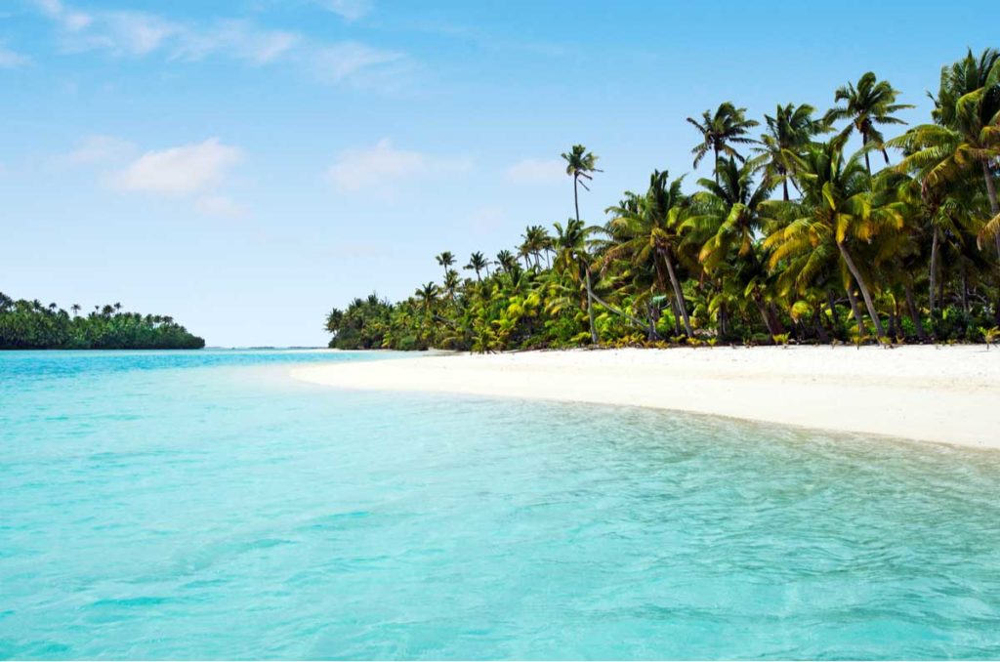
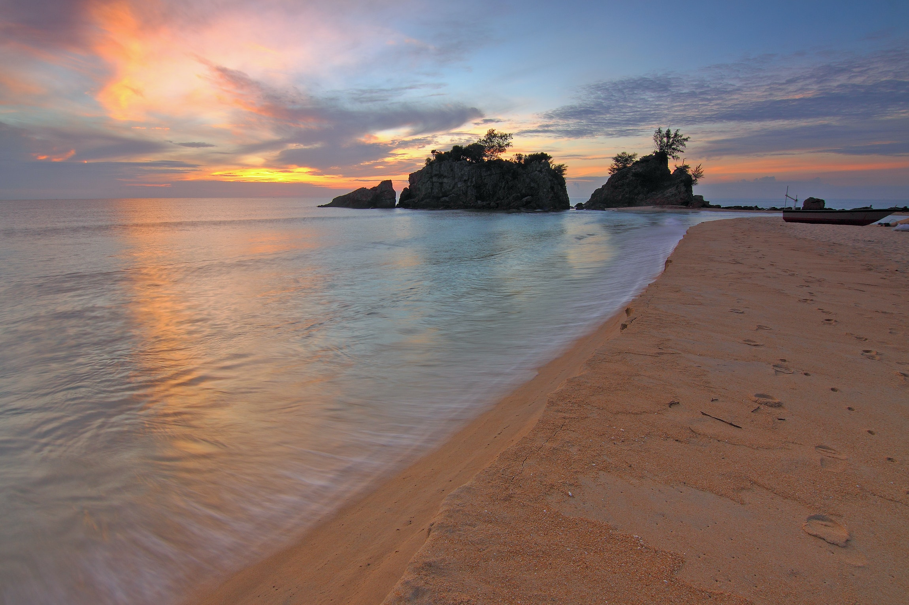
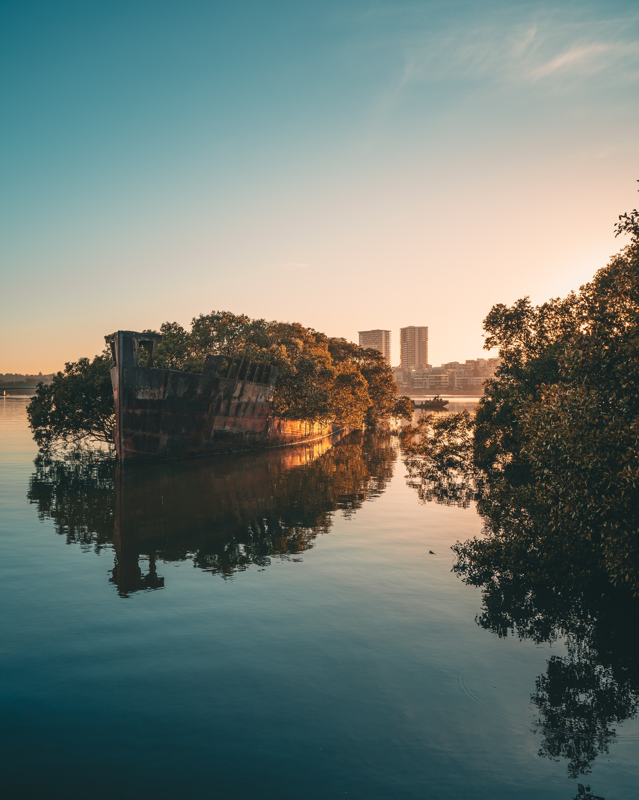

HLanz es una empresa de cruceros de renombre mundial que se enorgullece
de ofrecer viajes inolvidables a los pasajeros. Con una flota de barcos
de alta calidad, una tripulación altamente capacitada y una amplia
gama de comodidades a bordo, estamos dedicados a ofrecer una experiencia
de crucero sin igual. Desde el Caribe hasta el Mediterráneo y más allá,
nuestros viajes ofrecen destinos emocionantes para que los pasajeros
puedan disfrutar de una escapada relajante y rejuvenecedora.

En HLanz, estamos comprometidos con la conservación del medio ambiente y
creemos que nuestros viajes ofrecen una oportunidad única para que los
pasajeros se conecten con la naturaleza y aprendan más sobre ella. Desde
nadar en aguas cristalinas y explorar playas prístinas hasta caminar por
bosques exuberantes y ver la vida silvestre en su hábitat natural,
nuestros viajes están diseñados para permitir que los pasajeros se
sumerjan en la belleza natural del mundo que nos rodea.
Además de explorar la naturaleza, nuestros viajes también ofrecen la
oportunidad de visitar algunas de las ciudades más emblemáticas del
mundo. Desde pasear por las calles adoquinadas de Roma y disfrutar de la
impresionante arquitectura de Barcelona hasta explorar los mercados de
especias en Marrakech y maravillarse con la grandeza de la Torre Eiffel
en París, nuestros viajes están diseñados para ofrecer una experiencia
cultural inolvidable. Con tantos destinos emocionantes para elegir, ¡la
aventura te espera con HLanz!
En HLanz, nuestros cruceros están diseñados para ofrecer una experiencia
inolvidable para nuestros pasajeros. Desde el momento en que suben a
bordo, nuestros huéspedes son recibidos por una tripulación amable y
atenta que se asegura de que se sientan como en casa. Ya sea que deseen
relajarse en la cubierta del barco con una bebida refrescante o disfrutar
de una cena de lujo en uno de nuestros restaurantes, nuestros pasajeros
siempre recibirán el mejor servicio.
Nos enorgullece ofrecer una amplia gama de opciones para elegir. Desde el
sol y la arena de las playas del Caribe hasta la majestuosidad de los
glaciares en Alaska, nuestros cruceros están diseñados para llevar a nuestros
pasajeros a algunos de los lugares más espectaculares del mundo. Además,
nuestros cruceros también ofrecen la oportunidad de explorar ciudades vibrantes
y sumergirse en culturas fascinantes.
Queremos que nuestros pasajeros se lleven una experiencia que nunca
olvidarán, y eso incluye atardeceres increíbles. En Hlaz, nos aseguramos
de que nuestros pasajeros tengan la oportunidad de disfrutar de algunos
de los atardeceres más impresionantes del mundo desde la cubierta del
barco. Ya sea que estén navegando a través de los fiordos noruegos o
disfrutando de la vista del horizonte de Nueva York, nuestros pasajeros
pueden estar seguros de que experimentarán momentos mágicos que les
quedarán grabados para siempre en su memoria.
PRODUCTOS
¡Por supuesto! En HLanz, nos enorgullece ofrecer una amplia gama de
actividades para nuestros pasajeros. Ya sea que deseen relajarse en el spa
o participar en emocionantes deportes acuáticos, siempre hay algo para
todos en nuestros cruceros.
Organizamos eventos de entretenimiento en vivo todas las noches,
que incluyen espectáculos de música, magia, comedia y mucho más.
También ofrecemos una amplia gama de actividades diarias, como clases de
baile, juegos de trivia, sesiones de yoga y mucho más. Para aquellos que
buscan una experiencia más emocionante, ofrecemos deportes acuáticos como
windsurf, esquí acuático y buceo.
Además, también ofrecemos excursiones en tierra organizadas para nuestros
pasajeros en los diferentes destinos que visitamos. Desde visitas guiadas a
lugares emblemáticos hasta excursiones de aventura como paseos en bicicleta
de montaña o caminatas, nuestras excursiones en tierra son una excelente
manera de explorar los destinos de una manera emocionante y segura.
También organizamos eventos temáticos y fiestas a bordo del barco para
nuestros pasajeros. Desde fiestas de disfraces hasta eventos gastronómicos
temáticos, siempre hay algo emocionante que sucede en nuestros cruceros.
Además, para aquellos que buscan relajarse y desconectar, ofrecemos
instalaciones de spa y masajes en la cubierta del barco para que puedan
disfrutar de una experiencia de relajación y bienestar completa.
En resumen, en HLanz, nos esforzamos por ofrecer una amplia gama de
actividades emocionantes y divertidas para nuestros pasajeros. ¡Únete a
nosotros en alta mar para una aventura de ensueño y una experiencia de
crucero inolvidable!

SOBRE NOSOTROS
HLanz es una compañía de cruceros que fue fundada por Oussama Ed Dahabi en el
año 2001. Desde entonces, hemos recorrido un largo camino y nos hemos establecido
como una de las principales empresas de cruceros del mundo.
Oussama Ed Dahabi tenía una visión clara de lo que quería lograr con su
empresa de cruceros: crear una experiencia de viaje única y excepcional para
sus pasajeros. Comenzó ofreciendo viajes en barcos pequeños por la costa de
Europa y, a medida que su reputación crecía, decidió expandirse y ofrecer
cruceros de lujo a nivel internacional.
A lo largo de los años, HLanz ha continuado expandiéndose y mejorando sus
servicios. Hoy en día, nuestra flota cuenta con algunos de los barcos más
lujosos y avanzados tecnológicamente en el mundo de los cruceros. Ofrecemos
una amplia gama de destinos en todo el mundo, desde las playas tropicales
del Caribe hasta las ciudades más icónicas de Europa.
Nuestro enfoque siempre ha sido brindar a nuestros pasajeros una experiencia
de viaje inolvidable. Nos esforzamos por ofrecer un servicio excepcional y
una atención al detalle inigualable en todo momento. Desde la comida de
cinco estrellas hasta las excursiones en tierra organizadas y las
actividades a bordo, cada aspecto de la experiencia del crucero ha sido
cuidadosamente diseñado para asegurarnos de que nuestros pasajeros tengan
una experiencia única e inolvidable.
En resumen, la historia de HLanz es una historia de pasión, visión y dedicación
a ofrecer la mejor experiencia de viaje posible. Con Oussama Ed Dahabi al frente,
seguimos creciendo y mejorando cada día para asegurarnos de que nuestros pasajeros
tengan la experiencia de crucero de sus sueños.

COMO RESERVAR
En HLanz, nos esforzamos por brindar la mejor experiencia de crucero posible
a nuestros clientes. Sabemos que la reserva de un crucero puede parecer
abrumadora, por eso hemos hecho que el proceso de reserva sea fácil y
conveniente para nuestros clientes.
Hay varias formas en las que puedes reservar tu crucero con HLanz. La forma
más sencilla es visitando nuestra página web [hlanz@cruceros.com]y reservando
directamente en línea. Nuestro sitio web es fácil de usar y te permitirá ver
toda nuestra oferta de destinos, fechas y precios en un solo lugar. Una vez
que hayas elegido el crucero que deseas, puedes reservarlo y hacer el pago en
línea de manera segura y rápida.
Si prefieres hablar con una persona en vivo, también puedes reservar llamando
(+34 554 456 344) a nuestro servicio de atención al cliente. Nuestros agentes están altamente
capacitados y estarán encantados de ayudarte a encontrar el crucero perfecto
para ti y tu grupo, así como para ayudarte a resolver cualquier duda o
pregunta que puedas tener.
Además, también ofrecemos la opción de reservar a través de un agente de
viajes. Si tienes una agencia de viajes de confianza con la que trabajas
regularmente, ellos pueden ayudarte a hacer la reserva de tu crucero con
nosotros.
En resumen, en HLanz queremos que el proceso de reserva de tu crucero sea
fácil y sin problemas. Ofrecemos varias opciones para que puedas elegir la
que mejor se adapte a tus necesidades. Ya sea que prefieras reservar en línea,
hablar con un agente de servicio al cliente o reservar a través de tu agente de
viajes, estamos aquí para ayudarte a hacer realidad tus sueños de crucero.
TRABAJA CON NOSOTROS
Si estás interesado en trabajar con nosotros en HLanz, ¡estamos emocionados
de saberlo! Nos encanta trabajar con personas entusiastas y dedicadas que
quieran ser parte de nuestra familia de cruceros.
En primer lugar, es importante que revises nuestro sitio web y nuestra oferta
de empleo para ver si hay alguna posición abierta que se ajuste a tus
habilidades y experiencia. Si encuentras una posición que te guste, envíanos
tu currículum vitae y una carta de presentación explicando por qué te gustaría
trabajar con nosotros y cómo crees que puedes contribuir a nuestro equipo.
Si actualmente no tenemos ninguna posición abierta que se ajuste a tus
habilidades, no te preocupes, ¡todavía puedes unirte a nuestro equipo!
Envíanos tu currículum vitae y carta de presentación de todas formas y
estaremos encantados de tenerlos en cuenta en el futuro cuando haya una
posición abierta que se ajuste a tus habilidades.
Buscamos personas apasionadas, trabajadoras y comprometidas con nuestros
valores y misión. Si eres una persona que disfruta trabajando en equipo,
tiene una gran ética de trabajo y está comprometida a brindar una
experiencia de crucero de alta calidad a nuestros clientes, ¡entonces eres
la persona que estamos buscando!
Una vez que recibamos tu solicitud, la revisaremos cuidadosamente y nos
pondremos en contacto contigo si consideramos que eres un buen candidato
para el puesto.